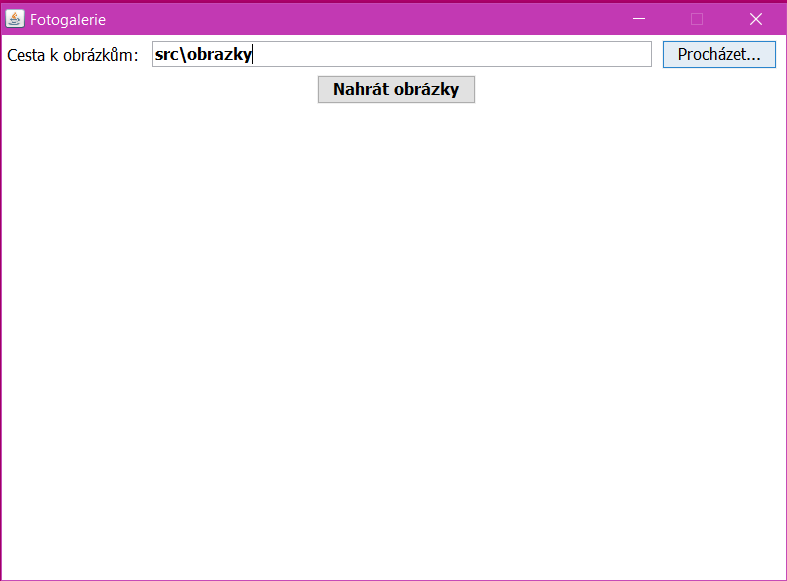
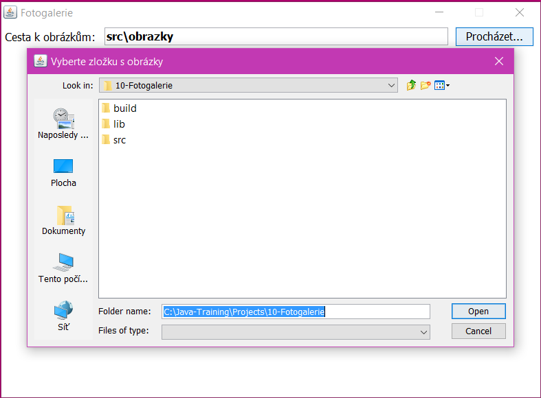
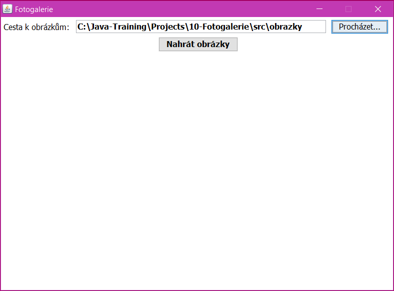
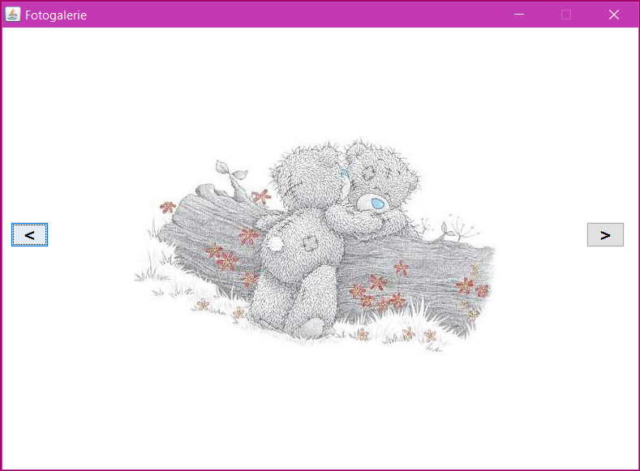
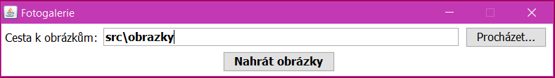
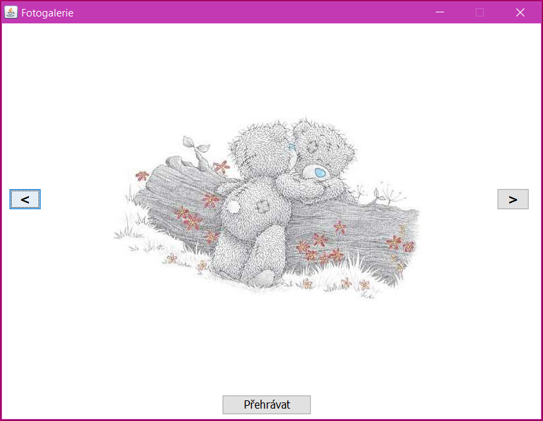

Úkol z lekce 10
ŽENY,
na naší předposlední lekci jsme pokračovali s pexesem. Za malý domácí úkol jste dostaly dodělat jednu drobnost - úkolem kolem bylo "List
Velký úkol je fotogalerie. Ty z vás, které jste dělaly na "tajném úkolu" již máte část hotovou, ale začněte znovu, ať se víc potrénujete. ;-)
Fotogalerie 1.0
Cílem je vytvořit fotogalerii, která bude přepínat fotky tlačítky doleva/doprava, po kliku na tlačítko se zobrazí předchozí/následující fotka.
Budeme ji navrhovat opět v designeru. V přiložených zdrojových souborech máte opět základ, do kterého dopište svoji část kódu. S čím jsme mysleli, že byste mohly mít trochu potíž, to jsme v kódu nechali… Pokud budete potřebovat poradit víc, jsme tu!
Naše fotogalerie se jmenuje jen Fotogalerie, ale vy si pojmenujte, jak se bude líbit vám… Fotogalerii navrhujte celou v jednom velkém okně a jednotlivých krocích zobrazujte pouze potřebné komponenty. Po spuštění vypadá takto (ani to není nutné dodržet, můžete si ji udělat hezkou podle vás):
Nenechte se splést, komponenta s "scr\obrazky" je obyčejné textové pole s tímto textem, nic složitého. Po kliknutí na „Procházet“ se otevře toto okno, ve kterém jsou viditelné pouze složky:
Po otevření požadované složky se v textovém poli zobrazí cesta k obrázkům:
A po kliknutí na tlačítko "Nahrát obrázky" se již spustí samotná fotogalerie:
Zde můžete posouvat obrázky tlačítky doprava/doleva.
Fotogalerie 2.0
Fotogalerie 2.0 je rozšířením verze 1.0. Cílem je upravit původní fotogalerii, aby obsahovala druhou funkci. Původní fotogalerie 1.0 přepíná fotky tlačítky doleva/doprava. Druhá, nová, funkce bude skryta pod tlačítkem „Přehrávat“ a bude automaticky zobrazovat jeden obrázek za druhým v intervalu 1,5-3 s.
Po otevření požadované složky a kliknutí na tlačítko „Nahrát obrázky“ se spustí samotná fotogalerie (okno se zvětší):
Po kliknutí na „Přehrávat“ se kromě spuštění přehrávání obrázků změní text na tlačítku na „Pozastavit“. Po kliknutí na „Pozastavit“ se zastaví časovač (= zastaví přehrávání obrázků) a text na tlačítku se opět změní na „Přehrávat“.
Materiály k úkolu
Materiály ke stažení k úkolu najdete zde: lekce10-ukol.7z